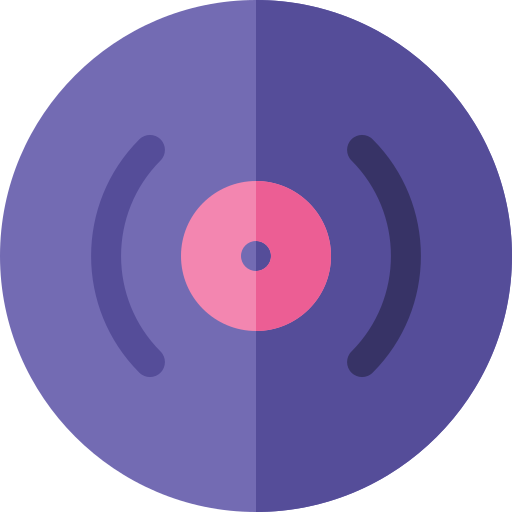
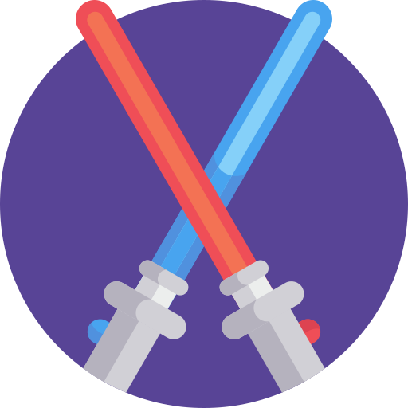
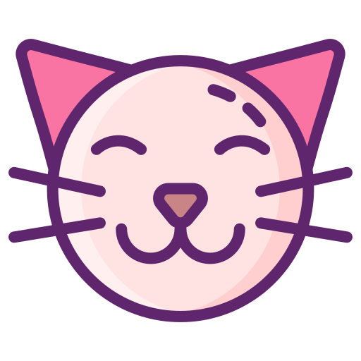
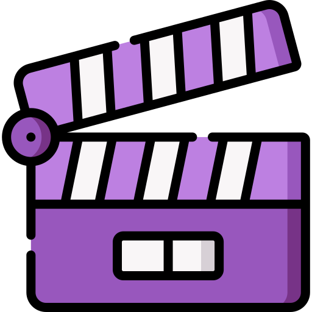

Neste espaço, irei dividir um pouco
sobre minha história e minha jornada
na tecnologia.
Meu nome é Flávia, tenho 22 anos e moro em Curitiba, Paraná. Minha jornada na área de tecnologia começou na Cubos Academy, onde tive meu primeiro contato com desenvolvimento de software. Esse curso serviu como porta de entrada para mim na tecnologia, despertando definitivamente minha curiosidade e paixão pela área, especialmente por backend. A partir daí, mergulhei de vez no mundo da tecnologia, onde sigo explorando cada vez mais.
Atualmente, estou cursando Análise e Desenvolvimento de Sistemas na Universidade Federal do Paraná, o que tem me ajudado a adquirir uma base sólida na área de desenvolvimento, ao mesmo tempo que tenho contato com outros segmentos da tecnologia que também despertam meu interesse. No curso, tenho a oportunidade de aprimorar minhas habilidades técnicas e conhecimentos ao desenvolver diferentes projetos.
Além dos estudos, faço estágio em TI na CELEPAR, onde posso explorar áreas diversas da tecnologia, como redes, infraestrutura e suporte técnico. Essa experiência tem sido fundamental para minha formação profissional, proporcionando um aprendizado prático e abrangente.
Tenho o sonho de me tornar uma nômade digital, trabalhando com tecnologia enquanto viajo pelo mundo. Durante essa jornada, gostaria de realizar trabalhos voluntários e ajudar as pessoas por meio da minha profissão, mantendo-me sempre aberta a novas experiências.
 Apaixonada por tudo que é vintage. Minha paixão vai desde moda até música e cinema. Também sou colecionara de antiguidades, discos de vinis e VHS.
Nerd clássica. Fã de ficção cientifica, principalmente obras como Star Wars e Doctor Who
Amante de animais. Tenho 3 gatos e 2 cachorros.
Cinéfila e viciada em música.
Cubos Academy
(2023)
Desenvolvimento de Softawre - Backend
Universidade Federal do Paraná
(2024-Atual)
Tecnologia em Análise e Desenvolvimento de Sistemas
CELEPAR
(2024-Atual)
Estágio em TI
JAVASCRIPT
HTML5
CSS3
NODE.JS
POSTGRESQL
GIT